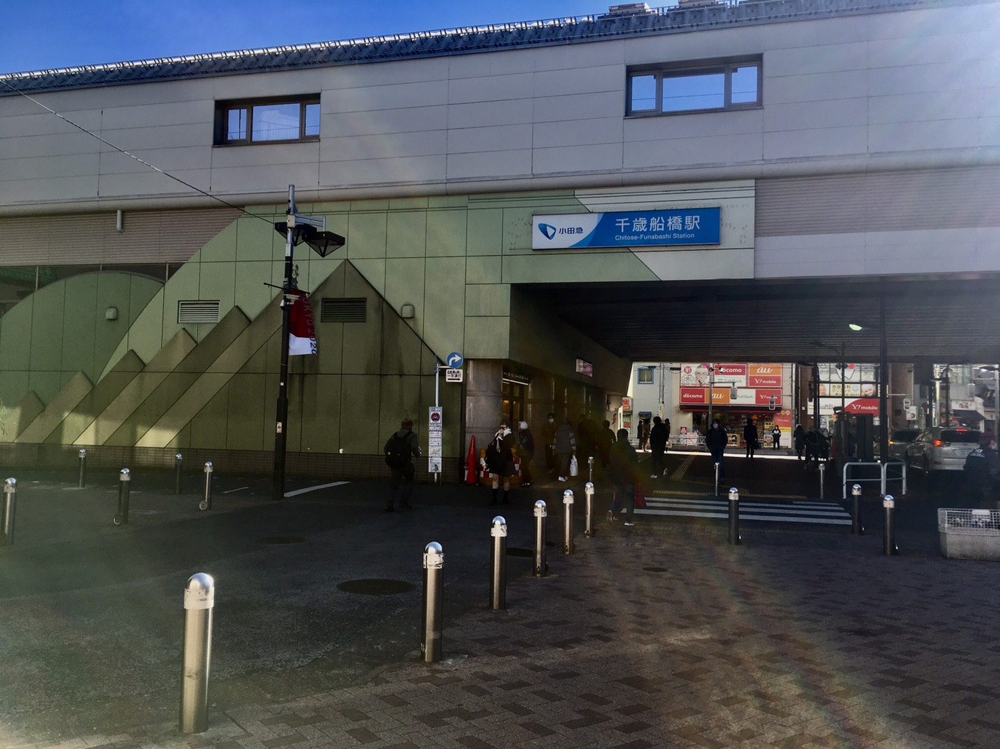
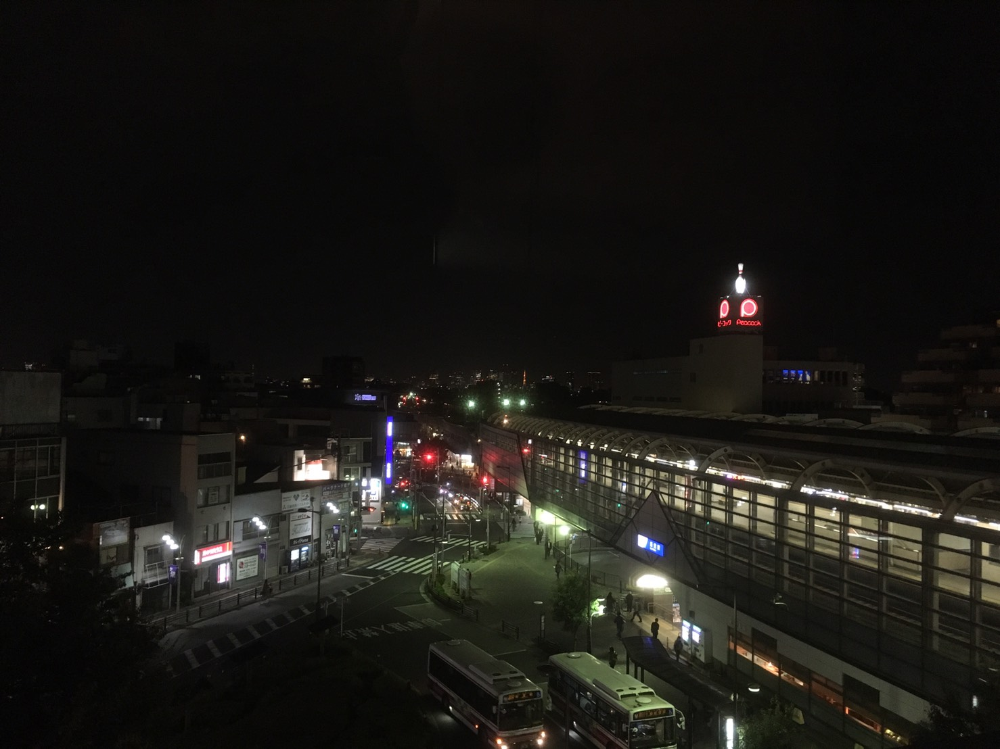

ABOUT
CHITOFUNA
KYODO
ANOTEHR
scroll ▼
街ブラをすると 「次はどこの街に行こうかな」 「どんなお店に行こうかな」 未知なる世界に思いを馳せることでしょう
The next town is？
まだ知らない"次の街"へ

たとえば、 世田谷区 千歳船橋。 俳優の森繫久彌さんが住んでいた世田谷屈指のB級タウン。 世田谷区の洗練されたイメージとはかけ離れた、昭和感あふれる雰囲気が魅力の街で昭和30年代創業の個店がいまなお健在、街の個性をつくる重要なファクターになっている。
Ｍ Ｏ Ｒ Ｅ

たとえば、 世田谷区 経堂。 世田谷区で、中央部に位置するのがここ「経堂」。東京農大、日大などの私立学校が多く、学生の姿が街に溢れている。 商業施設と昔ながらの商店街、おしゃれな新店舗など高級路線から庶民派まで共存している。
Home
About
Chitofuna
Kyodo
Another